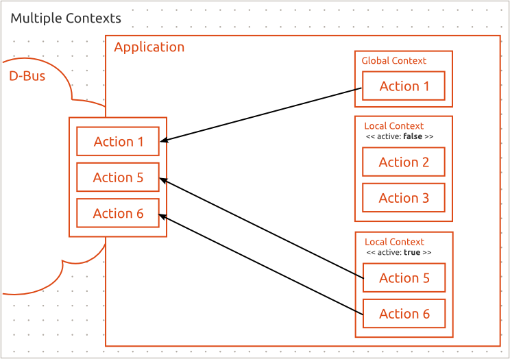

Action Contexts
Application which has different views needs to manage it actions based on the currently active view; not all of the actions supported by the application might be relevant or applicable on all of the views.
Therefore Unity Action API provides action contexts; a context groups actions together and by providing multiple contexts the developer is able to control the visibility of the actions. The ActionManager then exposes the actions from these different contexts.

Each application has one global context; the actions in this context are always available. The application may have one or more additional local context of which only one can be active at a time. The ActionManager merges the global context and the active local context together; the actions available at any given time is the union of the global context and the active local context.

For applications that do not require multiple contexts using the API is straight forward as the ActionManager provides the global context automatically.
import QtQuick 2.0 import Ubuntu.Unity.Action 1.0 Item { ActionManager { Action { id: globalAction text: "My Global Action" } } }
globalAction is now added to the global context.
When multiple contexts are needed the developer creates suitable number of ActionContext objects, adds the actions to the contexts, adds the contexts to the manager and sets the active one.
Setting the active context must be managed by the developer. The can only be one active local context at a time.
import QtQuick 2.0 import Ubuntu.Unity.Action 1.0 Item { ActionManager { localContexts: [ctx1, ctx2] Action { id: globalAction text: "My Global Action" } } ActionContext { id: ctx1 Action { id: ctx1Action1 text: "Context1, Action 1" } Action { id: ctx1Action2 text: "Context1, Action 2" } } ActionContext { id: ctx2 Action { id: ctx2Action1 text: "Context2, Action 1" } Action { id: ctx2Action2 text: "Context2, Action 2" } } Component.onCompleted: { ctx2.active = true; // now the ActionManager has exported // globalAction, ctx2Action1 and ctx2Action2 } }